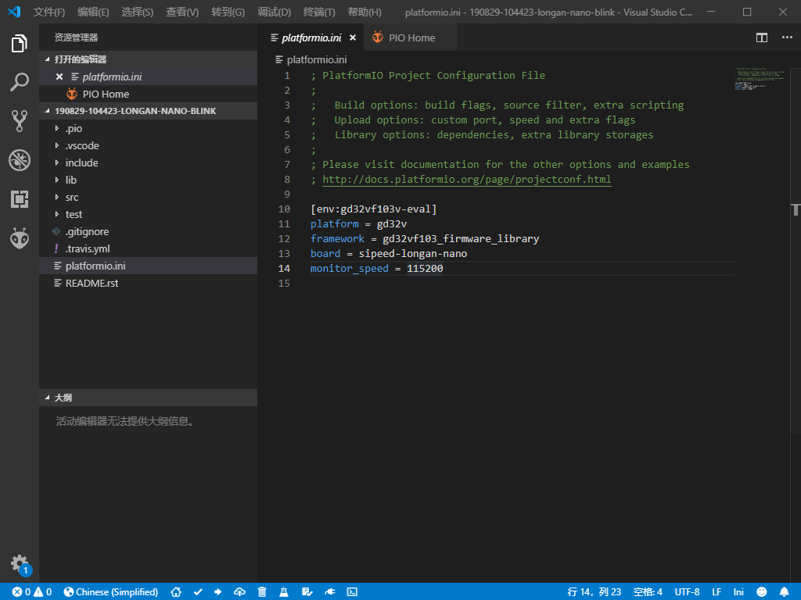

Blink 闪灯程序
1. 创建 Blink 工程
- 打开 PIO 主页 选择
Project Examples

选择
arduino blink点击Import导入示例程序 （初次导入需要下载架构文件及工具，需要等待较长时间）
导入成功后即可见到示例工程

2. 工程配置文件
- 我们首先需要编辑工程配置文件
platformio.ini根据自己的开发板型号，删掉其他开发板环境。

配置示例
[env:sipeed-longan-nano]
platform = gd32v ;平台，选择gd32v
framework = arduino ;可选 gd32vf103-sdk 或 arduino
board = sipeed-longan-nano ; 开发板
monitor_speed = 115200 ; 串口监视器波特率
upload_protocol = serial ; 下载工具 默认串口， 可选 dfu、jlink、gd-link 等
debug_tool = jlink ; 调试工具 默认jlink ，可选 sipeed-rv-debugger 等
PIO 可以在配置文件中实现设置宏定义， 控制编译流程等自定义功能，高级用法请参阅 PIO 官方文档.
3. 一键编译
点击左下角的 Build 即可构建项目

4. 连接开发板
4.1. 串口 ISP 下载
- 准备 USB 转 串口下载器
- 连接开发板与下载器
- 修改
platformio.ini文件， 添加下面一行内容：upload_protocol = serial - 开发板按住
BOOT键，再按RESET键重启开发板后再松开BOOT键，进入下载模式。
4.2. JTAG 下载
- 准备J-link 或 Sipeed RV 调试器
- 连接开发板
- 修改
platformio.ini文件， 添加下面一行内容：upload_protocol = jlinkupload_protocol = sipeed-rv-debugger
4.3. USB DFU 下载
- 首次 使用需要安装 libusb 驱动程序， 请参考此步骤 使用 Zaidig 安装驱动.
- 准备 USB Type-c 数据线
- 使用数据线连接电脑与开发板
- 修改
platformio.ini文件， 添加下面一行内容：upload_protocol = dfu - 开发板按住
BOOT键，再按RESET键重启开发板后再松开BOOT键，进入 DFU 模式。
5. 一键下载
按照上面步骤选择好下载方式后，即可使用 PIO 内置工具一键下载。
点击左下角的 Upload 即可向开发板上传程序。

6. 使用Zadig安装驱动
PIO 内置 dfu-util 下载工具，使用此工具需要为开发板安装 libusb 驱动。（注意： 与 GD 官方驱动不同）
建议通过 Zadig 安装 winusb 驱动。下载地址
下载成功后打开 Zadig
在下拉栏中选择 GD32V， 替换驱动选择 WinUSB, 点击替换按钮，即可替换成功。

7. DFU 图形界面下载
下载DFU工具：http://dl.sipeed.com/LONGAN/Nano/Tools/GD32_MCU_Dfu_Tool_V3.8.1.5784_1.rar
解压出两个文件夹：
GD32 MCU Dfu Drivers_v1.0.1.2316 和 GD32 MCU Dfu Tool_v3.8.1.5784
先进入driver文件夹，安装对应的驱动文件，注意使用管理员权限运行

运行 GD32 MCU Dfu Tool.exe 将 Longan Nano 插到电脑，按住 Boot0 键，短按 Reset 键，再松开 Boot0 键， 可以看到 DFU 工具中识别到了 GD32VF 芯片
选择对应的固件文件，并勾选烧录后校验，点击OK，即可进行烧录
烧录完成之后不会自动复位，需要自己手工按下复位按键，查看运行效果